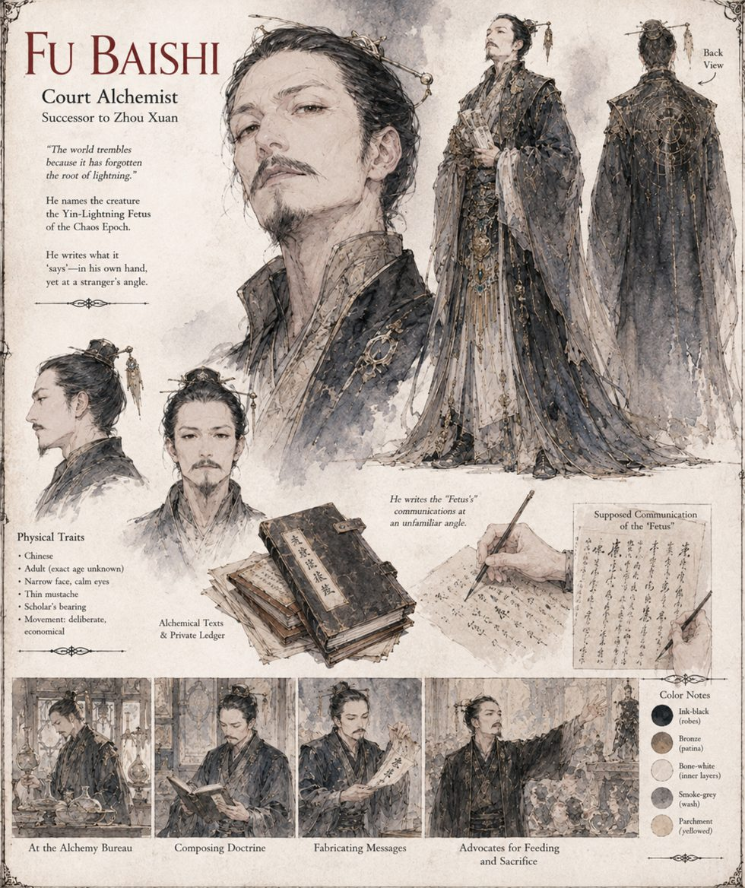

Fu Baishi
Court Alchemist · successor to Zhou Xuan
Spends a professional lifetime watching Zhou Xuan's mediocre compounds earn praise his own more rigorous ones never do, and concludes that the difference was never talent but nerve. Within days of his rival's death he announces that the truth was more magnificent than Zhou Xuan's small imagination allowed: the creature is no mere spirit-beast but a Yin-Lightning Fetus of the Chaos Epoch, a fragment of the world's own unformed birth-matter — which explains, with the satisfaction of a man correcting a rival's homework in public, why lesser theologies kept failing to predict its behavior.
During the siege he keeps a private ledger of the Fetus's nightly communications, in a script he says predates writing and which one servant, glimpsing a page before being dismissed from the room, recognizes as Fu Baishi's own hand held at an unfamiliar angle. He proposes that its silence means displeasure, and that displeasure requires sacrifice — a proposal Kang Yi rejects in council with a single flat sentence — and later that it be fed the palace's live carp. He survives the fall of Yujing by converting the authorship of his own doctrine, within a single week, into a testimonial for Du Heng's more modest claim on Heaven's favor, and spends the last years of a long and comfortable life as the new court's most senior religious consultant.
“The world trembles because it has forgotten the root of lightning.”
Appears in The Heavenly Thunder-Serpent